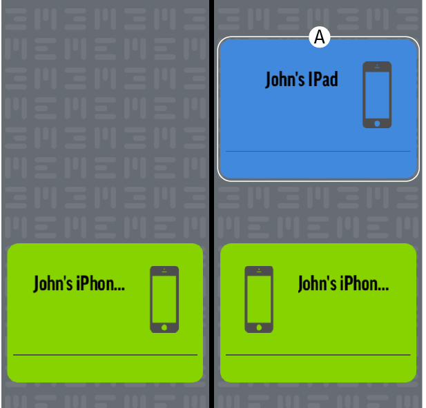

Molteplici dispositivi
Quando colleghi il cavo MEEM a un nuovo dispositivo, l'icona del nuovo dispositivo apparirà in verde all'interno dell'App. Se è stato eseguito il back-up sul cavo MEEM per altri dispositivi, le loro icone verranno visualizzate in blu (A) sull'icona del nuovo dispositivo e sulla destra (questo significa che i loro dati sono stati salvati su MEEM). Ora verrà effettuato il back-up del nuovo dispositivo e anche i nuovi dati saranno salvati su MEEM. È possibile effettuare il back-up di un massimo di tre dispositivi su un cavo.
